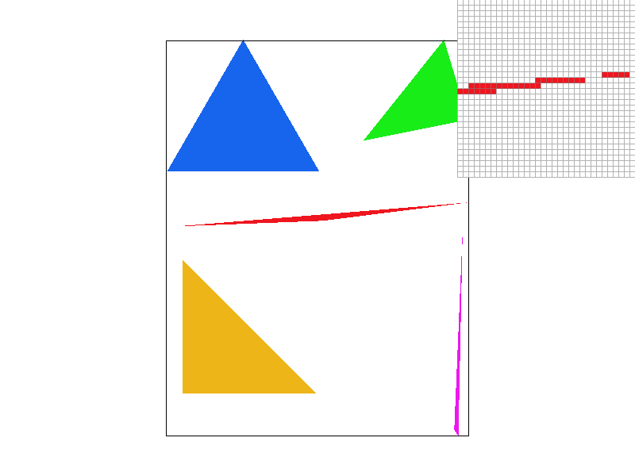

Overview
In this project, we implemented a rasterizer which could rasterize triangles and transform them and apply texture mapping. We compared different methods of anti-aliasing, such as supersampling, pixel sampling for textures, and level sampling with mipmaps.
Section I: Rasterization
Part 1: Rasterizing single-color triangles
First, we computed the line equations from the vertices of the triangle (as given in Lecture 2, slide 47). To check whether the order of the vertices is counter-clockwise, we take 2 vertices of the triangle and check whether the 3rd vertex is on the positive side of the half-plane given by those 2 vertices. If the vertices are clockwise, then we negate the line equations.
Our algorithm is no worse than checking every pixel in the bounding box of the triangle because we use cache blocking and parallelization when checking the pixels in the bounding box.
To get the bounding box of the triangle, we take the max and min of the x and y values and iterate over that region.

Part 2: Antialiasing triangles
To resize the samplebuffer when the sample rate changes, we multiply the size of the framebuffer by the sample rate.
First we iterate over each pixel that would appear in the framebuffer. Then for each pixel, we split it up into sub-pixels, and for each sub-pixel, if its center is in the triangle, we put the color into the samplebuffer.
To resolve the samplebuffer to the framebuffer, we take the average of all the elements in the samplebuffer that correspond to each element in the framebuffer.
To make sure that points and lines render correctly after supersampling, we filled in all the sub-pixels in the samplebuffer that would correspond to the single pixel in the framebuffer.
Supersampling is useful because it is the same as sampling the image after performing a box blur, which is a low-pass filter. Therefore, when sampling the filtered image, the high frequencies above the Nyquist rate are attenuated, which produces less aliasing.
|

|
|
|
With a sample rate of 1, the very skinny part of the triangle shows a lot of jaggies and some parts are not even rendered because the triangle is so skinny that it does not pass through the center of the pixel.
With a sample rate of 4, there are still some jaggies, but because some of the pixels are lighter than others and there are no missing pixels, the jaggies look less pronounced.
With a sample rate of 16, the jaggies are virtually gone because the sample rate is very high so we can get the most effect out of supersampling.
Part 3: Transforms
We made cubeman dab.
Section II: Sampling
Part 4: Barycentric coordinates
Barycentric coordinates are a way to linearly interpolate values inside a triangle that don't lie on the vertices. It does this by taking a weighted average of the values associated with each vertex.
Part 5: "Pixel sampling" for texture mapping
In pixel sampling, we take pixels in screen-space and find their corresponding coordinates in texture-space using Barycentric coordinates based on the texture-space coordinates of the vertices of each triangle.
In nearest-neighbor sampling, we take the coordinates in texture-space and find the nearest texel and output that color to the samplebuffer.
In bilinear sampling, we take the coordinates in texture-space and find the 4 nearest texels and perform linear interpolation with those texels and output the result to the samplebuffer.
|
|
|
|
|
|
Nearest-neighbor sampling with sample rate 1 has a lot of aliasing and gaps in the lines.
Nearest-neighbor sampling with sample rate 16 has some jaggies but almost no gaps in the lines.
Bilinear sampling with sample rate 1 is smoother than nearest-neighbor sampling with sample rate 1, but there are more gaps than nearest-neighbor sampling with sample rate 16.
Bilinear sampling with sample rate 16 is the smoothest with the least gaps and aliasing.
There will be a large difference between the two methods when the rasterized image size and the texture size are very different and the texture has many high-frequency components, such as the lines in the above examples.
Part 6: "Level sampling" with mipmaps for texture mapping
A mipmap is a data structure which stores recursively downsampled versions of the texture. Level sampling is a way to decide which version of the texture to use for a particular pixel. We implemented level zero mapping, nearest level mapping, and linear mapping.
To implement zero level mapping, we just always use the full-resolution texture by returning the zeroth level.
To implement nearest and linear mapping, we use Barycentric coordinates to get the coordinates of the pixel and its neighbors up and right in texture space. Using these, we calculate the difference between them in texture space to approximate how many texels one screen pixel takes. Based on this, we use the formula in Lecture 5 Slide 66 to get the mipmap level.
For nearest mapping, we simply round the level to the nearest integer.
For linear mapping, we sample using the floor and ceiling of the level and linearly interpolate between the colors based on the level.
Tradeoffs
Level Sampling
Using only the zeroth level is the fastest and requires the least memory, but results in significant aliasing.
Using nearest level sampling is slower and requires more memory, but significantly reduces aliasing.
Using linear level sampling uses the same amount of memory as nearest level sampling, but it is significantly slower, and the improvements on aliasing are only marginally better than with nearest level sampling.
Pixel Sampling
Both nearest pixel sampling and bilinear sampling are fairly fast, but bilinear sampling significantly reduces aliasing.
Number of Samples per Pixel
Increasing the number of samples per pixel reduces aliasing, but requires significantly more time and memory.
|
|
|

|
|